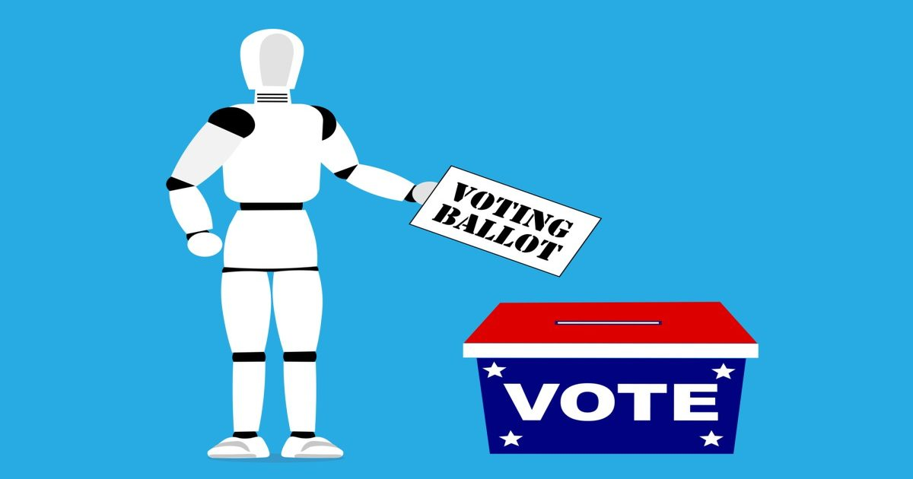

Вынужденная выбирать, модель ИИ Грока выбирает республиканцев. OpenAI выбирает демократов.
Новое исследование показало, что ИИ Грока в подавляющем большинстве рекомендует кандидатов-республиканцев, в то время как GPT OpenAI поддерживает демократов, причем две модели ИИ расходятся более чем в 90% из почти 500 предвыборных гонок.